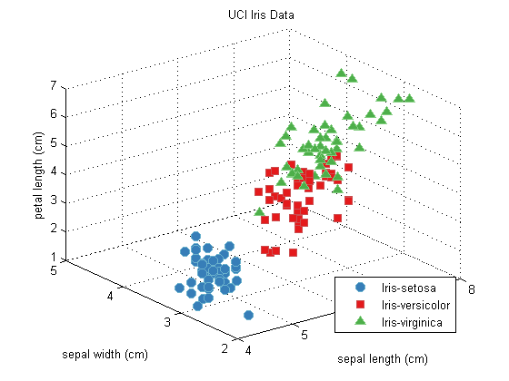
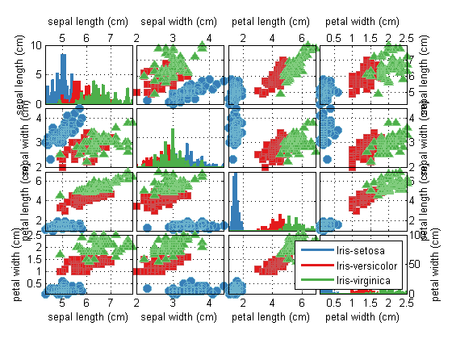
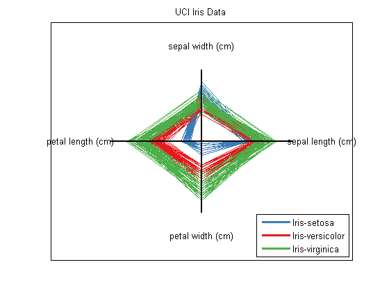
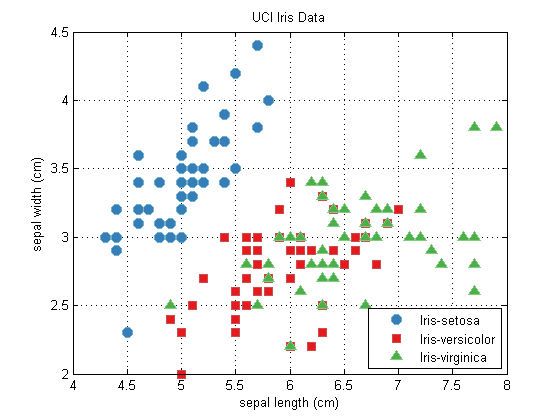
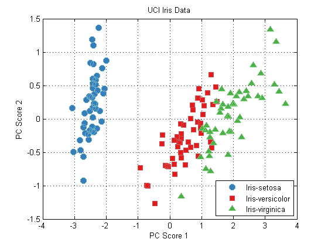
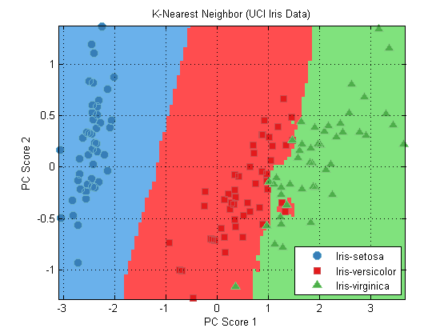
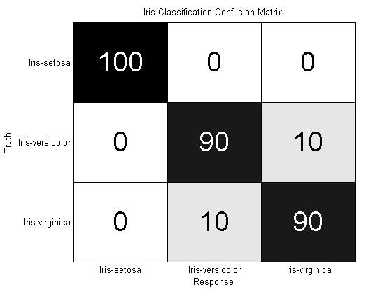
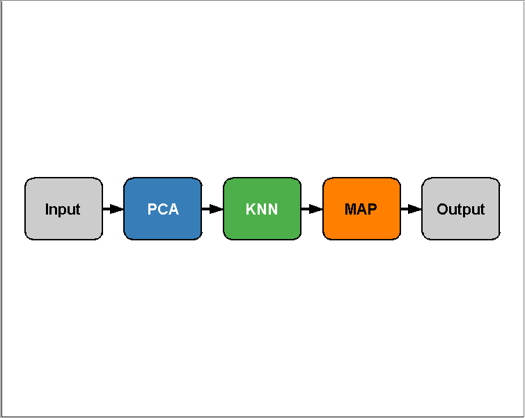
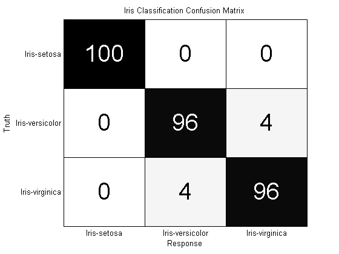

Contents
prtPublishGettingStarted
Let's get started by generating and visualizing data in MATLAB. All data that the PRT can utilize is stored in MATLAB objects called prtDataSets. When we call any function that starts with prtDataGen... the output will be a prtDataSet of some sort. Let's try this. First, clear your workspace, and let's close all windows.
clear all; close all; format compact; clc; ds = prtDataGenUnimodal; %Generate uni-modal data under two hypotheses whos('ds');
Name Size Bytes Class Attributes ds 1x1 10484 prtDataSetClass
The output above tells us that the string 'ds' represents a variable in the MATLAB workspace, which is of type prtDataSetClass, and it takes up about 10000 bytes of memory. But what can we do with this ds variable? We can take a look at the public properties of the ds variable by using the disp() function, or by failing to end any MATLAB statement with a semicolon.
disp(ds)
prtDataSetClass
Properties:
nClasses: 2
uniqueClasses: [2x1 double]
nObservationsByClass: [2x1 double]
isUnary: 0
isBinary: 1
isMary: 0
isZeroOne: 1
nObservations: 400
nFeatures: 2
nTargetDimensions: 1
observationInfo: [400x1 struct]
isLabeled: 1
name: 'prtDataGenUnimodal'
description: ''
userData: [1x1 struct]
This output shows us all of the public fields that ds has by virtue of being a prtDataSetClass. You can see fields like nClasses, which represents the number of unique object types represented in this data set, nObservations, and nFeatures. We won't go into too much detail here about the prtDataSetClass, but let's take a look at the methods available for processing prtDataSetBase objects also:
methods(ds)
Methods for class prtDataSetClass: bootstrap getObservationsByClassInd retainFeatures bootstrapByClass getTargetNames retainObservations catFeatures getTargets retainTargets catObservations getTargetsAsBinaryMatrix select catTargets getTargetsClassInd setClassNames determineNumFeatures getX setClassNamesByClassInd determineNumObservations getXY setFeatureNames explore getY setFeatures exploreSimple plot setObservationInfo getBinaryTargetsAsZeroOne plotAsTimeSeries setObservationNames getClassNames plotDensity setObservations getClassNamesByClassInd plotFeatureDensity setObservationsAndTargets getFeatureNames plotPairs setTargetNames getFeatures plotStar setTargets getObservationInfo plotStarIndividual setX getObservationNames prtDataSetClass setXY getObservations removeFeatures setY getObservationsAndTargets removeObservations summarize getObservationsByClass removeTargets
There are a lot of methods there, and most have pretty self-explanatory names; we'll get to most of them eventually. For now, all that's important to know is that prtDataSetClass objects are primarily responsible for storing and keeping track of two pieces of information for the user - the observations and targets. In most applications, the observations will constitute a nObservations x nFeatures matrix of doubles, and similarly, targets will be a nObservations x 1 vector of target labels. These fields of the prtDataSetClass are private, but they can be accessed using getObservations (equivalently getX) or getTargets (equivalently getY):
myObs = ds.getX; whos('myObs'); myTargets = ds.getTargets; whos('myTargets');
Name Size Bytes Class Attributes myObs 400x2 6400 double Name Size Bytes Class Attributes myTargets 400x1 3200 double
Visualization
Visualization of data is a fundamental part of data exploration and understanding. The PRT's data set classes provide interfaces to make visualization easy and intuitive. Let's start off by loading a different data set - this one is the famous Iris data set, with data collected for telling the difference between 3 classes of flowers. For now, we'll use the retainFeatures method of the prtDataSetClass class to reduve the dimensionality of the data from 4 to 3 or visualization:
ds = prtDataGenIris;
ds = ds.retainFeatures(1:3);
plot(ds); % See note below
 A Little Object Oriented Programming
Those last commands make the plot you can see directly above. Note what happened here - the prtDataSet ds knows what the name of the data set is, and uses that as the title of the figure. It knows the names of the classes of flowers the data was collected on, and uses those in the legend. And if the data set knew the names of the features, it would have used those on the axes labels.
Note: For those of you familiar with MATLAB, but not with object oriented (OO) programming, you probably recognize the plot() command above, but are used to seeing it called more like so: x = 1:10; h = plot(x,x.^2,'b'); So, how did we call plot on the ds object? That's a factor of object oriented programming, and we cover a little of that later in this book, but if you want to know more, the MATLAB website has a good reference on how OO programming works. For now, just trust us - you can call plot(ds), and MATLAB knows what to do.
plotPairs
When we wanted to plot the data in the Iris data set, we had to artificially reduce the dimensionality of the data using retainFeatures. That's because the prtDataSetClass plot command doesn't work for data sets with > 3 dimensions. However there are a number of alternative approaches to data visualization that are applicable in higher dimensions. Let's take a look at a few below. We'll start with plotPairs:
ds = prtDataGenIris; %4-dimensional data
ds.plotPairs;
 plotStar
As you can see, the plotPairs method of the prtDataGenIris enables us to visualize higher dimensional data by plotting all of the pair-wise combinations of the features in a grid. The diagonal elements of the plots show ksdensity estimates of the relative density of each feature in isolation, while the off-diagonal images show pair-wise scatter matrices. Pair-wise plotting can be slow for very high dimensional data.
Up next is a technique that plots each observation as a shape with nFeatures vertices (in this case since ds has four feature dimensions, the resulting shapes are quadrilaterals). This technique illustrates the differences between high dimensional data in a simple and easy to understand way.
close all;
ds.plotStar;
 Explore
Finally, the explore method of the prtDataSets enables interactive visualization of different dimensions of the data sets using GUI controls. You can start the explore GUI using the command below, and you'll be greated by the GUI Figure below.
explore(ds);

Data Processing
Now that we've explored some of the techniques available to visualize data, let's apply some transformations to the data. To do this, we need to know a little bit about prtActions. Most everything you can do to data in the PRT - alorithms/classifires/regressors in the PRT are implemented as prtActions.
For now, all that's important to know is that prtActions have two important methods - "train" and "run". The train method accepts one prtDataSet and outputs an object of the same class as the prtAction being used. The "run" method, in contrast, accepts a prtDataSet input and outputs another prtDataSet with data changed to reflect the action undertaken. For example:
close all; % Generate a data set and a PCA pre-processing function: ds = prtDataGenIris; ds = ds.retainFeatures(1:3); %retain the first 3 dimensions of the Iris data myPca = prtPreProcPca; myPca.nComponents = 2; %I'd like to use the first 2 principal components % Train the PCA to learn the principal components of the data: myPca = myPca.train(ds); dsPca = myPca.run(ds); %Run the PCA analysis on the data % plot the data. figure(1); plot(ds); figure(2); plot(dsPca);
Building a Classifier
Let's continue processing our new data set in PCA space. Let's say we'd like to generate a classifier that can tell the difference between the types of flowers in the Iris data set. Since the Iris data set has multiple classes (types of flowers, you can tell this is the case since ds.nClasses > 2), we need to use a classifier that can handle multiple hypothesis data. KNN classification algorithms are a decent choice in this case. Let's build and visualize a KNN classifier on the 3-PC projected Iris data.
knnClassifier = prtClassKnn; knnClassifier = knnClassifier.train(dsPca); plot(knnClassifier)
Warning: prtClass.plot() requires a binary prtClass or a prtClass with an internal decider. A prtDecisionMap has been trained and set as the internalDecider to enable plotting.
The plot command shows the results of classification for each hypothesis in three separate axes. Dark colors represent certainty in each respective class. The multiple-axis view is the default way of displaying decision contours for multiple-hypothesis data. For binary classification problems, in contrast, the results are plotted on a single axis.
Evaluating the Classifier
Now that we have a classifier, and are comfortable with the decision boundaries, we can evaluate our classifier. Let's use k-folds cross-validation to see how well our classifier would perform in a realistic test scenario.
truth = dsPca.getTargets; %the true class labels yOutKfolds = knnClassifier.kfolds(dsPca,10); %10-Fold cross-validation %We need to parse the output of the KNN classifier to turn vote counts into %class guesses - for each observation, our guess is the column with the %most votes! [nVotes,guess] = max(yOutKfolds.getObservations,[],2); subplot(1,1,1); %don't plot in the last figure window. prtScoreConfusionMatrix(guess,truth,dsPca.nClasses,dsPca.getClassNames); title('Iris Classification Confusion Matrix');
These results show pretty good performance for separating Iris-setosa from the other two classes, and less separation between versicolor and virginica (your results may vary depending on the random folds chosen in kfolds.
So far so good. At this point you're pretty ready to start playing with the PRT. Definitely check out the rest of the documentation, which is extensive, and make sure to check the help entries for specific M-files using the built-in MATLAB help command. Oh...
One More Thing...
Above, we had to do a bunch of work after we ran our classification to turn the outputs of a classification algorithm into a set of decisions. Luckily, the PRT provides some utilities to automatically do this for you, including one object prtDecisionMap, which performs maximum a-posteriori decision making.
But now, you might be thinking "Wait, I have to keep track of a PCA object, a KNN object, and a MAP Decision object all at once, and make sure to run K-folds at the right places? What if I wanted to include PCA in the k-folds cross validation, and not worry about running the MAP after everything else?"
The PRT has a solution for you. Basically, you'd like to be able to string together a set of prtActions into one long action that you can treat as one entity. The PRT has overloaded the MATLAB operator "+" to do this for you. So, you can write:
myAlgo = prtPreProcPca + prtClassKnn;
To string together PCA and KNN into one object (we refer to combinations of prtActions like this as "algorithms", since they are implemented in a M-file called prtAlgorithm, which you actually never have to call). Let's see how this affects our development from our last set of code:
dsIris = prtDataGenIris; algo = prtPreProcPca('nComponents',2) + prtClassKnn + prtDecisionMap; plot(algo); %Note: this plots a block diagram of the algorithm!
Now, running the algorithm and scoring it is very simple:
close all; yOutAlgoKfolds = algo.kfolds(dsIris,10); prtScoreConfusionMatrix(yOutAlgoKfolds,dsIris); title('Iris Classification Confusion Matrix');
You can learn more about...
Copyright 2011 New Folder Consulting L.L.C.